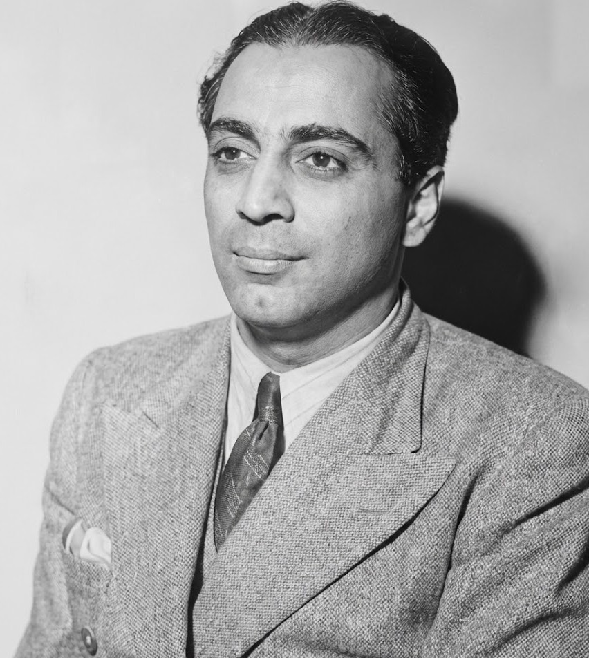
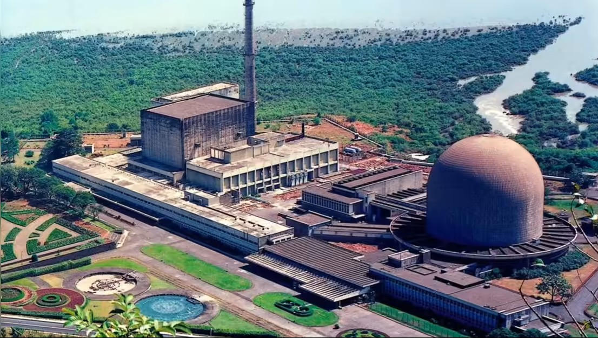
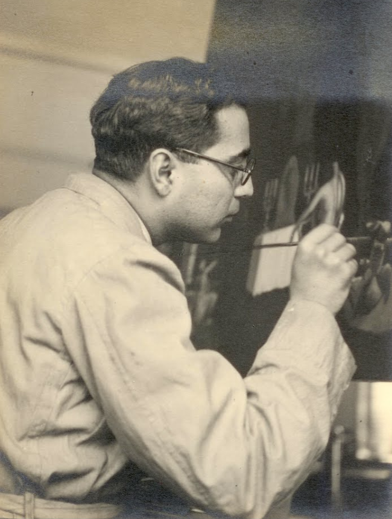

The Audacious Visionary
What I admire most about Dr. Homi Bhabha was his absolute fearlessness in dreaming big for a nation that was not yet even independent. In the 1940s, when India was struggling with basic infrastructure, Bhabha envisioned a future powered by atomic energy.
He didn't just want India to catch up; he wanted India to lead. His famous 1944 letter to the Tata Trust, proposing the Tata Institute of Fundamental Research (TIFR), stated that when nuclear energy became viable, "India will not have to look abroad for its experts but will find them ready at hand." This level of foresight is rare and deeply inspiring.

The Master Builder
Many brilliant scientists are content staying in their labs, focusing solely on their research. Bhabha was different. He realized that for science to flourish in India, it needed a home and an ecosystem.
I adore his ability to translate abstract scientific goals into concrete reality. He founded TIFR, often called the cradle of Indian science, and established the Atomic Energy Establishment, Trombay (now the Bhabha Atomic Research Centre - BARC). He was a charming diplomat who convinced governments and industries to back scientific endeavors. He didn't just build buildings; he built the confidence of a nation.

The Artistic Soul
Perhaps the most captivating aspect of Dr. Bhabha was that he was not merely a man of equations and atoms. He was a true Renaissance man. It is incredibly inspiring that the same mind that calculated nuclear cross-sections also possessed a deep love for classical music, opera, and painting.
He was an accomplished painter himself, and his artistic sensibilities influenced how he built institutions. He ensured that TIFR was furnished with modern art and surrounded by beautiful gardens, believing that a beautiful environment fosters beautiful scientific thoughts. This holistic view of human potential—where science and art are not enemies but partners—is what makes him truly unique.
